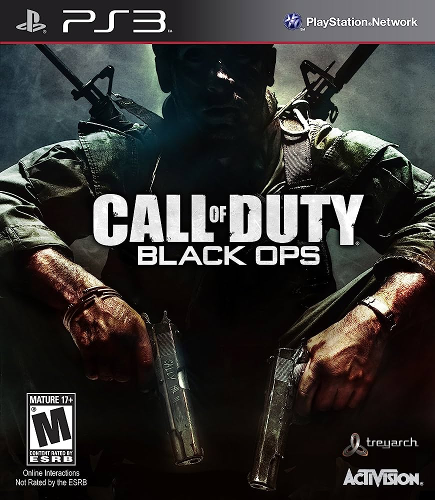
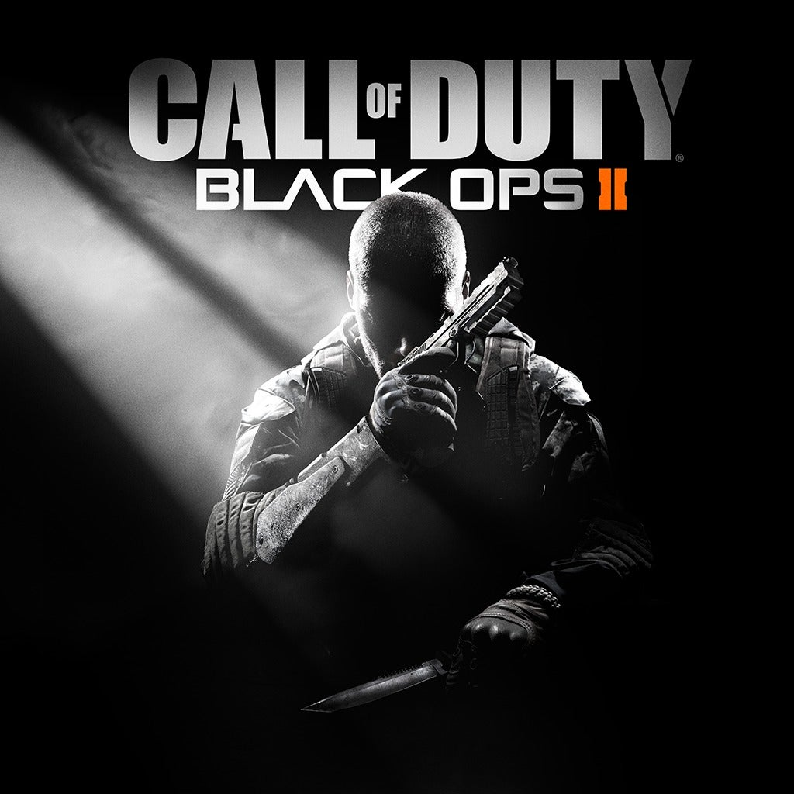
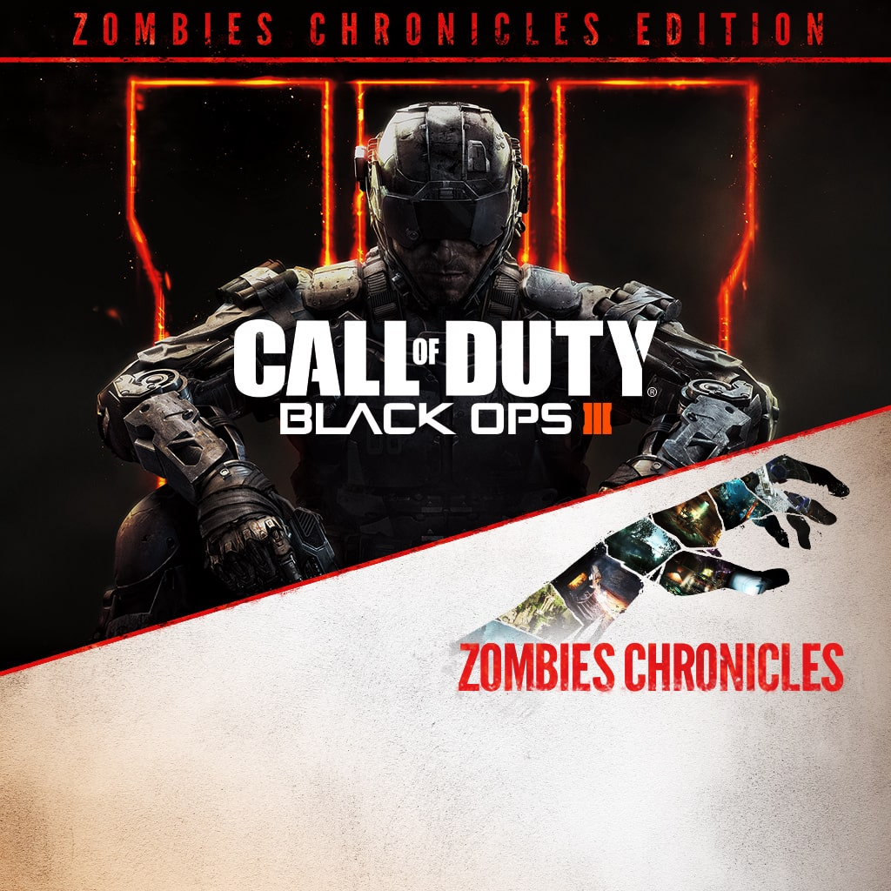

| Title | Images | Price | Stock | Details |
Call Of Duty Black Ops 1 |
 | R475,33 | 10 |
Call of Duty®: Black Ops is an entertainment experience that will take you to conflicts across the globe. It has a mode, titled "Zombies", which is included in the game, it can be played in split screen, solo or 4 players. The game mode features three maps, "Five", Kino Der Toten, and the unlockable Dead Ops Arcade. "Five" takes place in The Pentagon during a chain of events that differ from the storyline of the campaign mode. The playable characters, John F. Kennedy, Richard Nixon, Robert McNamara, and Fidel Castro, who are interrupted from negotiations by an outbreak of zombies. Kino Der Toten takes place in an abandoned Group 935 facility located within a theater in Berlin during 1963. |
Call Of Duty Black Ops 2 |
 | R599,00 | 10 |
Call of Duty: Black Ops II is a 2012 first-person shooter video game developed by Treyarch and published by Activision. Zombies mode returns in Black Ops II, featuring Green Run, which includes three sub-maps, being Town, Farm, and Bus Depot, as well as three game modes, being TranZit, Survival, and Grief modes. Grief mode is introduced, and later, Turned, which both involve players going against each other. |
Call Of Duty Black Ops 3 |
 | R679,60 | 10 |
Call of Duty: Black Ops III brings back Zombies in the form of the normal zombies maps, the over-the-head Dead Ops Arcade 2, and a campaign-zombies mixture called Nightmares. MapsShadows of Evil: Take to the streets of Morg City to combat the undead and embrace the curse to uncover its mysteries. The Giant: Return to the secret facility where it all began, and strike at the heart of the zombie scourge. This map is only available in Collector's Editions of Black Ops III. Der Eisendrache: Bound together by a fragile alliance, our heroes pursue the scattered remnants of Group 935 to their mountain top fortress in the Australian Alps... This map is available in the Awakening DLC pack. Zombies Chronicles is the fifth DLC map pack for Call of Duty: Black Ops III it entails 8 new zombie maps which, are from Call of Duty: World at War. |
Black Ops 4 is the first mainline Call of Duty title without a traditional single-player campaign mode.
Instead, it features the Specialist HQ, which focuses on the backstories of the game's multiplayer characters, known as "Specialists"
Zombies returns as the cooperative multiplayer mode for Black Ops 4.
The game mode features a wider range of customization, allowing for more personalized play styles.
Mechanics of the game can be customized via "Custom Mutations", which include over 100 variables,
such as overall difficulty, zombie speed, health, damage, and more.
Time-limited events known as "Callings" are also promised to be included in the game for long-term engagement.
Call of Duty: Infinite Warfare is a 2016 first-person shooter video game developed by Infinity Ward and published by Activision.
The mode brings numerous new features to Zombies as a whole, including Candy Perks, Fate and Fortune Cards, and new Wonder Weapons such as the Forge Freeze Gun.
Infinite Warfare Zombies consists of five maps; Zombies in Spaceland, Rave in the Redwoods, Shaolin Shuffle,
Attack of the Radioactive Thing, and The Beast From Beyond.
Each map is set in a different time period and movie genre.